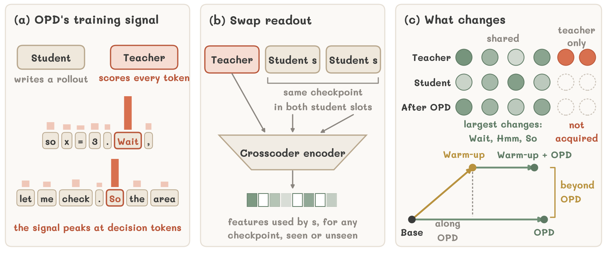
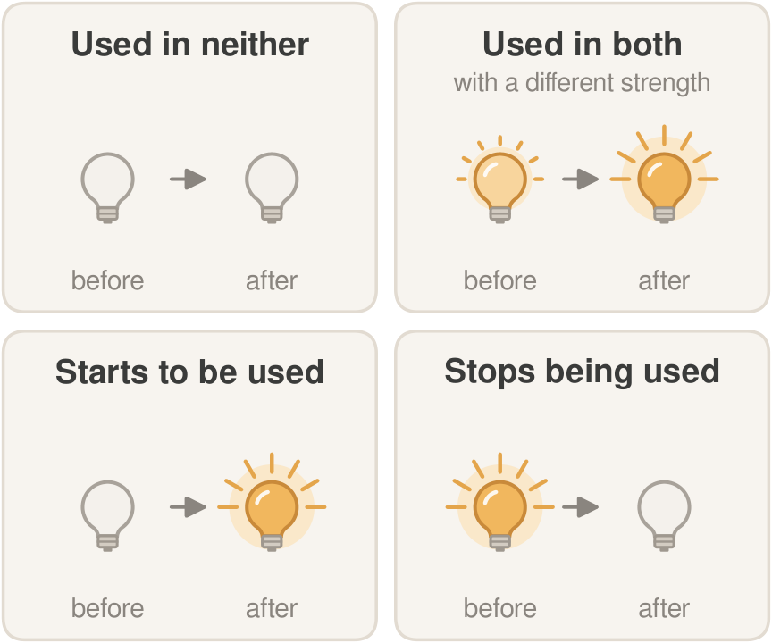
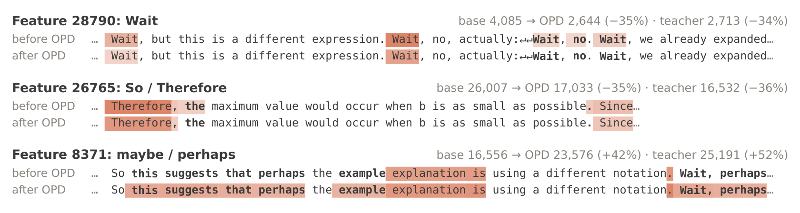
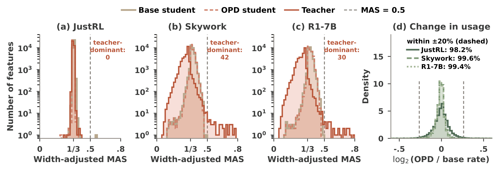
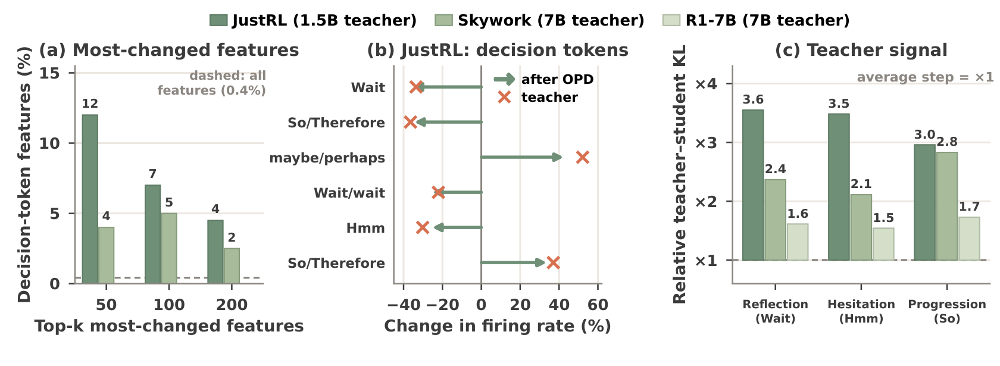
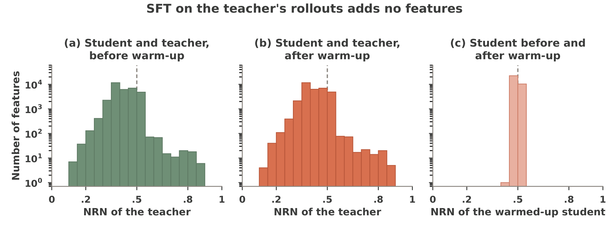
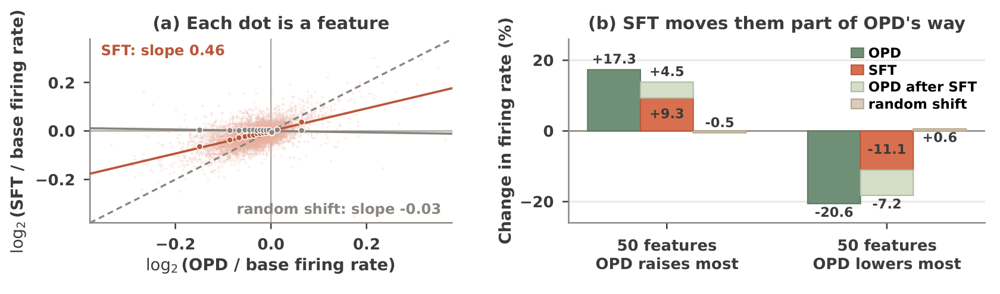
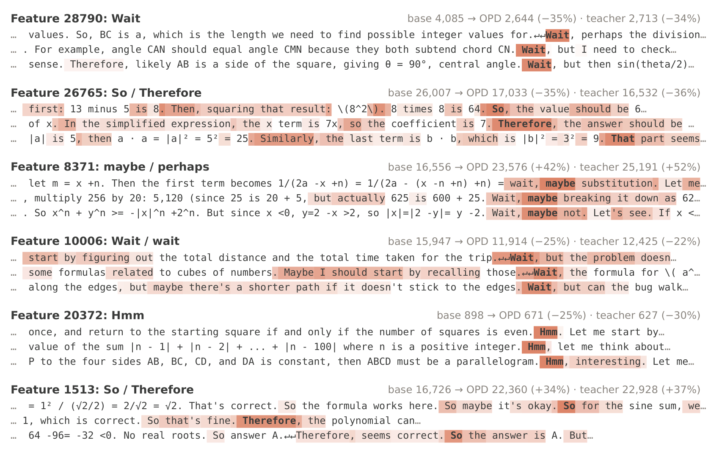
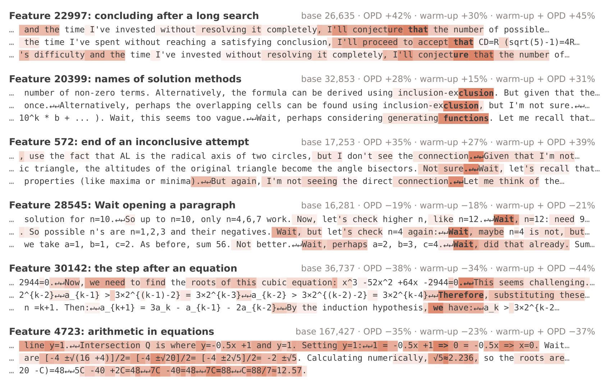
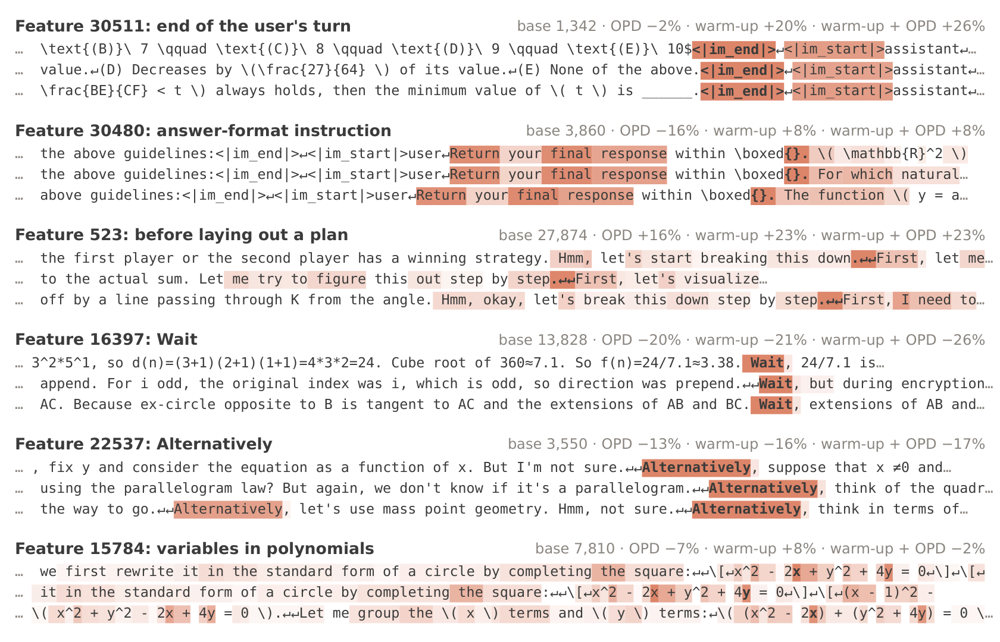

OPD creates no new features
Across three OPD settings, no feature is gained or lost, and over 98% of the student's frequently used features change their firing rate by less than 20%.
A Mechanistic Interpretability Perspective via Sparse Crosscoders
1School of Computing and Data Science, The University of Hong Kong 2Department of Computer Science and Technology, University of Cambridge 3Shenzhen Loop Area Institute
Corresponding author

Across three OPD settings, no feature is gained or lost, and over 98% of the student's frequently used features change their firing rate by less than 20%.
The 7B teachers dominate 42 and 30 features. OPD does not pass them on: the student's share of their decoder norm is the same before and after OPD.
Features for words such as Wait, Hmm, and So are strongly over-represented among the features OPD changes most, and the teacher disagrees with the student most at these words.
SFT on the teacher's own rollouts, which makes OPD more effective, keeps every feature shared and gives the student none of the teacher's own features.
First, it already raises and lowers many of the features that OPD later raises and lowers, doing part of OPD's work in advance. Second, it changes features in ways that OPD alone would not, most notably those for the conversation format, the style of reasoning, and mathematical notation, and these changes persist through OPD.
Imposing the warm-up's feature change on a directly distilled student, without changing any weights, recovers most of the warm-up's benefit; removing it from the warmed-up student removes most of it.
A sparse crosscoder learns one dictionary of features for the student before OPD, the student after OPD, and the teacher, so that the three can be compared feature by feature. Its joint encoding, however, gives a single code for all three models, and decoder-based attribution barely differs between two nearly identical students. Neither can tell how training changes when the student uses a feature.
The swap readout places the activation of one student checkpoint in both student slots and keeps the teacher's activation in the teacher slot. Because the two students' activations are nearly identical in the training data, the crosscoder determines only the sum of their encoders; with the same activation in both slots, the undetermined part cancels. The readout therefore reads each checkpoint on its own, including checkpoints the crosscoder never saw.


We distill a DeepSeek-R1-Distill-Qwen-1.5B student from three teachers that differ from it by RL, by scale, or by both, and train one crosscoder per setting on the base student, the OPD student, and the teacher.
| Setting | Teacher | Differs from the student by |
|---|---|---|
| JustRL | JustRL-DeepSeek-1.5B | RL |
| Skywork | Skywork-OR1-Math-7B | RL and scale |
| R1-7B | DeepSeek-R1-Distill-Qwen-7B | scale |

Decision-token features make up 0.4% of all features but 12% of the 50 features OPD changes most under JustRL and 4% under Skywork. OPD moves these features toward the teacher's usage, and it is at these tokens that the teacher disagrees with the student most.

An SFT warm-up on the teacher's rollouts commonly precedes OPD and makes it more effective. Following Simple-OPD, we distill Qwen3-1.7B-Base from Qwen3-4B-Base-GRPO: with the warm-up, OPD recovers 46% of the teacher's advantage over the base student instead of 30%. A natural explanation is that the warm-up supplies new features that OPD cannot. It does not.

Instead, the warm-up reweights the shared features. To see how this relates to OPD, we plot, for every frequently used feature, its change in firing rate after the warm-up against its change after OPD, both relative to the base student. If the warm-up merely did part of OPD's work, the dots would lie on a line through the origin. We therefore split the warm-up's change into two parts: the part along OPD's direction, a scaled copy of OPD's change fitted by least squares, and the part beyond it, the scatter of the dots around this line.
The part along OPD's direction does some of OPD's work in advance: of the 50 features OPD raises and lowers most, 88% and 92% already move the same way after the warm-up. The part beyond it is spread over many features; those it moves most concern the conversation format, the style of reasoning (features for Wait, Alternatively, and But fire less, and one for laying out a plan step by step fires more), and mathematical notation. A random shift of the same size produces no alignment (slope −0.03).

At every token, we decode the difference between the swap-readout codes of the student after and before the warm-up and add it to the residual stream of the directly distilled student, or subtract it from the student distilled after the warm-up, without changing any weights. The same change with the feature identities shuffled serves as a control.
| Student | AIME24 | AIME25 | AMC23 | Avg. | Δ [95% CI] |
|---|---|---|---|---|---|
| OPD | 10.4 | 7.5 | 37.8 | 18.6 | – |
| + feature change | 11.2 | 7.1 | 45.6 | 21.3 | +2.7 [+0.5, +6.0] |
| + shuffled change | 7.5 | 4.6 | 35.6 | 15.9 | −2.7 [−5.4, +0.3] |
| Warm-up + OPD | 12.5 | 9.2 | 44.1 | 21.9 | – |
| − feature change | 10.0 | 7.1 | 40.6 | 19.2 | −2.7 [−5.3, −0.4] |
| − shuffled change | 14.2 | 9.2 | 46.9 | 23.4 | +1.5 [−0.8, +4.1] |
avg@8 (%) with 8 samples per problem. Adding the warm-up's feature change brings the directly distilled student close to the warmed-up one; removing it brings the warmed-up student close to direct OPD. The shuffled change does neither.
Each card lists a feature's strongest held-out contexts in the student before training, shaded by the feature's activation, with its firing counts on the right.



A BibTeX entry will be added when the paper is public.